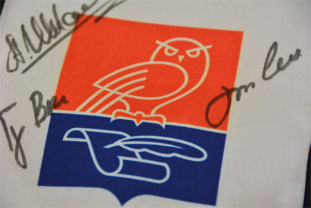

<!DOCTYPE html>
<html>
<head lang="en">
    <meta charset="UTF-8">
    <title></title>
    <link rel="stylesheet" href="css/main.css" />
</head>
<body>

    <!-- news -->
    <div class="news__list__container">
        <h1>Нотариусы Москвы и России получилиподарок из космоса</h1>

        <!-- content-time -->
        <time class="content-time" datetime="2015-08-17">17 августа 2015 года</time>
        <!-- /content-time -->
        <div>

            <!-- news__list__container-img -->
            
            <!-- /news__list__container-img -->

            <p>Экипаж космического корабля «Союз ТМА-15М» в составе командира корабля Антона Шкаплерова,  бортинженеров Терри Вёрста, Саманты Кристоферетти поприветствовал нотариусов Москвы и России из космоса. Во время своего пребывания на Международной космической станции с 24.11.2014 по 11.06.2015 года они оставили свои автографы на вымпелах Московской городской и Федеральной нотариальных палат.</p>
            <p>Специально изготовленные для космического полета сверхлегкие и малогабаритные вымпелы отправились на орбиту вместе с необходимыми грузами для МКС в марте этого года. На землю они вернулись вместе с экипажем в июне.</p>
            <p>В условиях невесомости космонавтам было непросто оставить свои автографы на тканевой поверхности. Как известно чернильные ручки отсутствуют в космическом быту, а карандашом весьма затруднительно расписаться на ткани. Но экипаж справился с задачей, и космические письменные принадлежности, кстати, весьма похожие на земные маркеры, отобразили собственноручные подписи всех трех членов экипажа.</p>
            <p>Часть вымпелов, совершивших космический полет, займет свое почетное место в  ряду реликвий МГНП и ФНП, остальные будут вручены в качестве сувениров друзьям и партнерам Палат.</p>

        </div>
    </div>
    <!-- /news -->

</body>
</html>